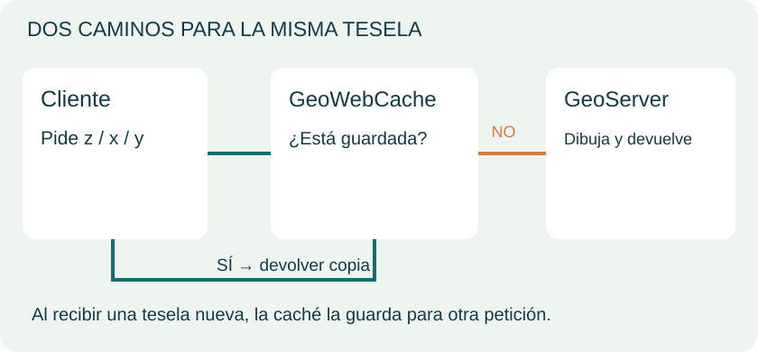
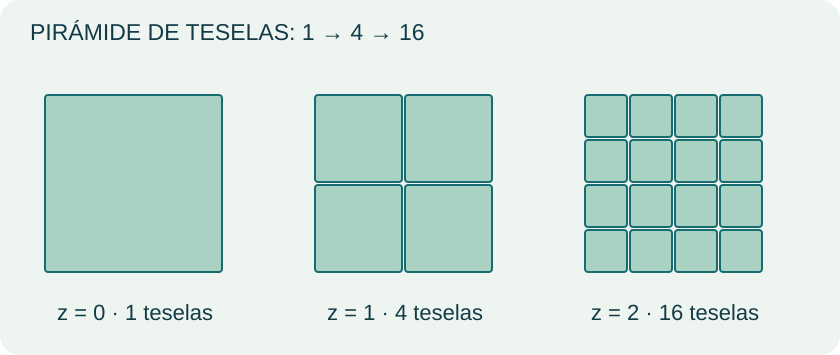
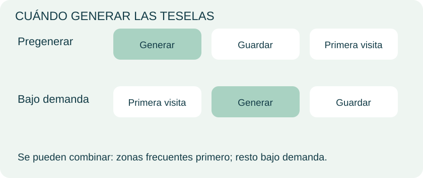
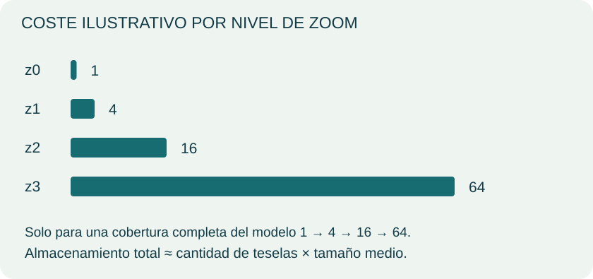
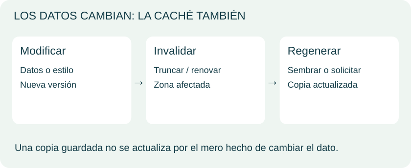
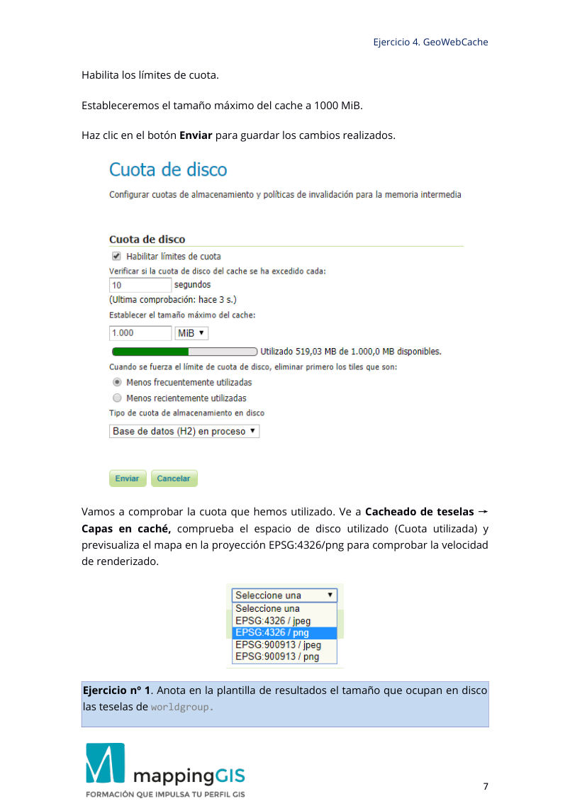
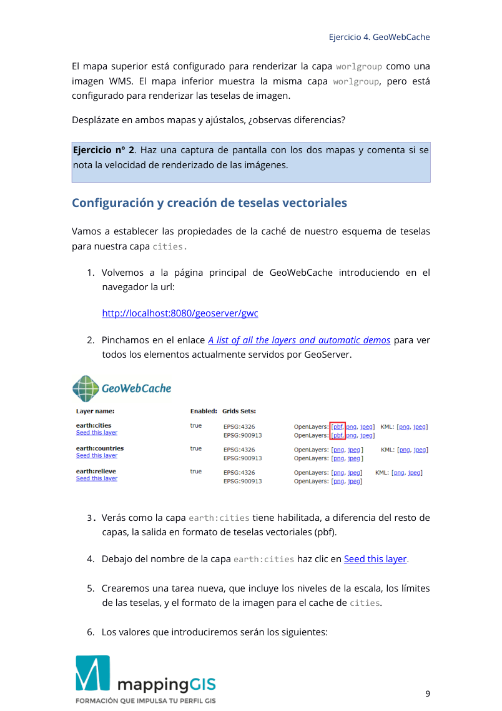
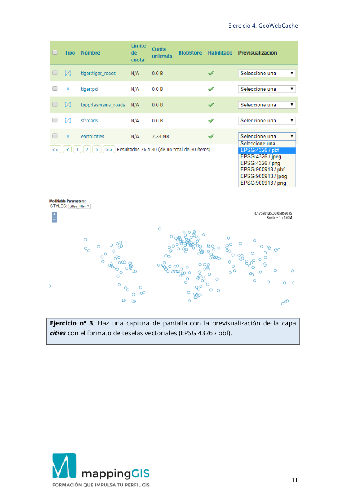
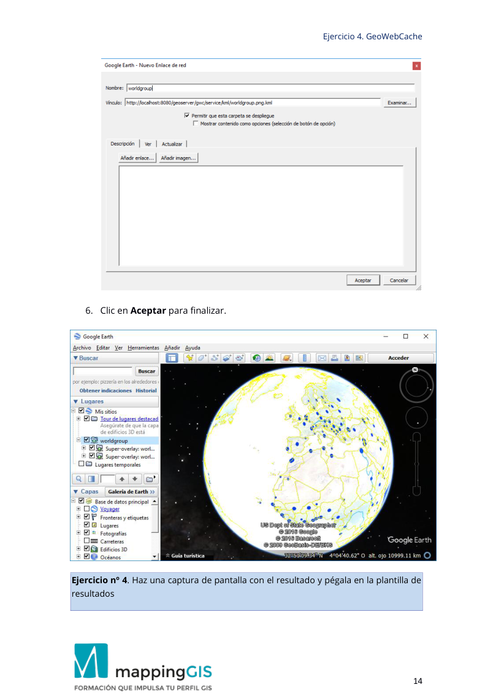

Unidad 4 · GeoWebCache y las teselas
Dibujar una vez.
Reutilizar muchas veces.
Comprende cómo la caché se interpone entre el visor y el servidor, qué cambia al aumentar el zoom y cómo decidir qué conviene guardar.
Petición → caché → teselas → estrategia → actualización
Síntesis visual de las clases, con diagramas originales para explicar los conceptos. La práctica se conserva al final de esta misma unidad.
1. Acierto o fallo de caché

GeoWebCache puede actuar entre un cliente y un servidor WMS. Busca una copia compatible con la petición: si existe, la entrega; si falta, obtiene una nueva, la almacena y la devuelve.
La primera visita a un área no cacheada puede requerir dibujar el mapa. Las siguientes pueden reutilizarlo. La mejora depende de la configuración, las peticiones y los recursos: no hay un tiempo universal de respuesta.
| Situación | Trabajo necesario |
|---|---|
| Tesela disponible | Leer y entregar la copia |
| Tesela ausente | Generar, guardar y entregar |
La caché reduce trabajo repetido; no sustituye la preparación de datos ni la configuración del servicio.
Referencia: GeoServer · GeoWebCache.
2. Una pirámide de cuadrículas

El visor construye una vista con piezas pequeñas. Un grid set define referencia, extensión, resoluciones y dimensiones de tesela.
Al acercarte, el visor solicita piezas de un nivel más detallado. En el modelo ideal mostrado, cada pieza se divide en cuatro. Otras cuadrículas pueden tener configuraciones diferentes.
La petición identifica el nivel y la posición. WMTS y otros esquemas teselados permiten acceder a mapas organizados en cuadrículas. La práctica configura caché integrada con GeoServer.
Referencia: GeoServer · GeoWebCache.
3. Pregeneración y demanda

Pregenerar prepara teselas antes de las visitas. Bajo demanda las crea conforme se explora el mapa.
| Estrategia | Beneficio | Coste o límite |
|---|---|---|
| Pregeneración | Áreas previstas preparadas | Cómputo y disco por adelantado |
| Demanda | Genera zonas solicitadas | Primera petición potencialmente más lenta |
| Combinación | Prioriza zonas frecuentes | Requiere decidir extensión y zoom |
El PDF propone combinar ambas estrategias. En las herramientas del curso, seed, reseed y truncate corresponden a creación, regeneración y eliminación de caché.
Referencia: GeoServer · GeoWebCache.
4. Zoom y almacenamiento

Para una cobertura completa del modelo de una tesela inicial y subdivisión por cuatro, los niveles contienen 1, 4, 16 y 64 piezas. La suma hasta un nivel incluye los anteriores.
Estimación: tamaño total ≈ número de teselas × tamaño medio. El resultado real depende de cobertura, niveles, compresión, formato, estilos y variantes de petición. Las barras muestran un modelo, no tu instalación.
Las cuotas ayudan a limitar el almacenamiento. La práctica pide anotar el tamaño real y comparar dos visores; esos resultados se obtienen con la configuración y los archivos originales.
Referencia: GeoServer · GeoWebCache.
5. Renovar y distinguir contenidos

Si cambian datos o estilos, una copia anterior puede seguir mostrando la versión antigua. Define qué área y qué niveles necesitan invalidación o regeneración; después comprueba el visor.
Las teselas ráster contienen una representación dibujada. Las vectoriales transmiten geometrías y atributos codificados para que un cliente compatible las represente. Vector no equivale a PNG.
La práctica incluye teselas vectoriales y Google Earth. Se conserva íntegramente al final; aplicaciones y proveedores externos pueden haber cambiado desde la clase.
Referencia: GeoServer · GeoWebCache.
6. Preparar el entorno de caché
Continúa con GeoServer de la Unidad 3, el espacio earth, el grupo worldgroup y la capa cities. Comprueba primero su previsualización WMS: una caché no corrige una capa mal publicada. Necesitas también el HTML comparativo de la carpeta web del paquete del curso y Google Earth para la última actividad.
- Inicia GeoServer y abre
http://localhost:8080/geoserver/gwc. - Entra en la lista de capas y demostraciones automáticas. Localiza
earth:worldgroupyearth:cities. - Si no aparecen, revisa en GeoServer sus opciones de cacheado y guarda. Conserva el CRS y los nombres que utilice la práctica.
7. Configurar, generar y comprobar teselas
Generar la caché de worldgroup
- Abre la configuración de teselas de
worldgroup. Comprueba la cuadrícula y el formato que pide el contexto original; la cuadrícula define CRS, niveles y extensión. - Abre Seed/Truncate desde las herramientas de GeoWebCache. Selecciona el grupo, la cuadrícula, el formato, la extensión y el rango de niveles indicados en la práctica.
- Elige Seed y ejecuta la tarea. Revisa su estado hasta que termine. No amplíes los niveles por intuición: cada nivel adicional puede multiplicar el trabajo y el espacio.
- Consulta el directorio de caché configurado en esa instalación; puede estar dentro del directorio de datos o en otra ubicación definida por el administrador. Mide su tamaño en disco con el explorador de Windows para la actividad 1.
Comprueba: la tarea ha terminado sin errores y la demostración del grupo carga teselas. No hay un tamaño universal correcto: registra lo que ocupa tu generación concreta.
Comparar bajo demanda y pregeneración
- Localiza el archivo con los dos visores de la carpeta
webdel paquete original. Colócalo en elwwwdel directorio de datos de GeoServer, conservando sus dependencias. - Revisa sus URL para que apunten a tu puerto y al grupo
earth:worldgroup. Ábrelo mediantehttp://localhost:8080/geoserver/www/seguido del nombre real del archivo, no con doble clic comofile://. - Compara los mapas en la misma extensión y zoom. Desplázate hacia áreas aún no visitadas y repite la navegación.
- Distingue la caché del servidor de la del navegador. Si registras tiempos, observa las peticiones en Red / Network de las herramientas de desarrollo; una sensación de rapidez aislada no identifica por sí sola el origen de la mejora.
Habilitar teselas vectoriales
- Revisa si la instalación ofrece el módulo de teselas vectoriales. Si falta, instala la extensión compatible con tu versión y reinicia GeoServer.
- En el cacheado de
cities, habilita el formatoapplication/vnd.mapbox-vector-tiley la cuadrícula indicada por la práctica. - Vuelve a la lista de demostraciones y abre la salida PBF de
earth:citiesenEPSG:4326, como pide la actividad. - Comprueba los puntos en un cliente compatible. PBF es contenido binario: abrir su descarga como texto no debe producir una imagen PNG.
Revisar Google Earth y mantener la caché
Utiliza la salida KML o el enlace de red generado por GeoServer que describe el contexto original. Guarda o abre ese enlace en Google Earth y comprueba que apunta a tu servidor activo. Un enlace con localhost funciona en el equipo del servidor, no en otro ordenador sin cambiar la dirección y el acceso.
| Situación | Acción |
|---|---|
| Cambiaste el estilo pero ves lo anterior | Revisa el área y niveles afectados y regenera la caché correspondiente |
| Quieres completar teselas ausentes | Usa seed con el alcance previsto |
| Necesitas regenerar teselas existentes | Revisa reseed y su alcance |
| Necesitas retirar una caché | Revisa truncate; elimina las teselas seleccionadas |
| No aparece PBF | Comprueba extensión y formatos habilitados |
| Google Earth no carga | Revisa URL, servidor iniciado y compatibilidad del enlace |
Antes de ejecutar una tarea comprueba capa, extensión, niveles y formato: truncate no equivale a generar. Conserva el servidor y sus capas para las unidades siguientes.
Fuentes: práctica original de MappingGIS · GeoServer · GeoWebCache integrado.
Material y referencias
Ampliación técnica: GeoWebCache integrado en GeoServer. Las versiones e interfaces del PDF corresponden al entorno de las clases; los diagramas muestran conceptos.
Antes de resolver las actividades
Completa la preparación y los procedimientos anteriores. Después avanza por los ejercicios en su orden original: varias actividades utilizan archivos, capas o cambios de las anteriores. Cada actividad conserva su enunciado y sus paneles de instrucciones y capturas dentro de la página; el PDF queda como respaldo.
Si una consigna menciona «el código anterior» o «la imagen anterior», abre su panel de contexto antes de trabajar. Comprueba qué archivo o recurso debes modificar, guarda el cambio y verifica el resultado antes de tomar la captura. No ejecutes de nuevo una creación o importación si ya existe el objeto correspondiente.
Ejercicio Unidad 4
Enunciados y contexto de los PDF de MappingGIS. No se añaden actividades ni soluciones. Los paneles incluyen los pasos originales dentro de la unidad; el PDF conserva la maquetación completa.
Práctica: PDF original completo.
Ejercicio 1 · Tamaño de la caché
Anota en la plantilla de resultados el tamaño que ocupa n en disco las teselas de worldgroup.
Pasos y contexto originales de la clase
Página 3
Ejercicio 4. GeoWebCache
3
Creación de un caché de teselas raster
Hay dos pasos en la creación pro-activa de una cache de teselas:
1. Configuración de las propiedades del almacenamiento en caché, y
2. La creación de teselas
Vamos a establecer las propiedades de la caché de nuestro esquema de teselas
para nuestro mapa base worldgroup.
1. Para comenzar abre GeoWebCache introduciendo en el navegador la url:
http://localhost:8080/geoserver/gwc
2. Pincha en el enlace A list of all the layers and automatic demos para ver todos
los elementos actualmente servidos por GeoServer.
3. Verás como la capa cities tiene habilitada, a diferencia del resto de capas,
la salida en formato de teselas vectoriales : pbf (protobuf). Puedes hacer
clic en alguno de estos enlaces para ver el aspecto y fijarte en la url que se
genera, que será de este estilo:
http://localhost:8080/geoserver/gwc/demo/earth:cities?gridSet=EPSG:4326
&format=application/vnd.mapbox-vector-tile
Página 4
Ejercicio 4. GeoWebCache
4
4. Busca el grupo de capas worldgroup en la lista y haz clic en la vista previa
con OpenLayers [png]
5. Vuelve a la página principal GeoWebCache.
6. Busca el grupo de capas worldgroup y haz clic en Seed this layer:
Otra manera de acceder a las opciones de cacheado de imágenes es desde
GeoServer.
Accede al panel de la izquierda al grupo Cacheado de teselas → Capas en caché.
A continuación, seleccionamos el grupo de capas worldgroup y pinchamos en la
opción Seed/truncate. También podemos eliminar todas las teselas, haciendo clic
en Empty.
7. Crearemos una tarea nueva, que incluye los niveles de la escala, los límites
de las teselas, y el formato de la imagen para el cache de worldgroup.
Página 5
Ejercicio 4. GeoWebCache
5
8. Procura que los valores sean como los que se indican a continuación:
Number of tasks to use: Esto se refiere a la gestión de procesador
para la tarea. La regla de oro es establecer este valor en dos veces
(2x) el número de núcleos de tu sistema. Si trabajas a nivel local, deja
el número en 2.
Type of operation: Selecciona Reseed.
o Reseed, genera todos los tiles.
o Seeds, llena los huecos donde no existen tiles.
o Truncate, vacía la memoria caché.
SRS: Tienes que elegir el SRS en el que se renderizarán las teselas. Lo
vamos a hacer en EPSG:4326
Format: Este valor determina que formato de salida de imagen
usará el serv icio de mapas cuando se creen la s teselas. Esto
determina:
o El tamaño en el disco de las teselas
o La calidad de imagen, y
o La capacidad de hacer el fondo de las teselas transparente.
Esto se puede dejar como image/png.
Zoom start : El nivel de zoom superior, en general suele ser una
buena idea crear las teselas desde el nivel de zoom más alto hacia
abajo. Deja esto en 00.
Zoom stop: El nivel de zoom más bajo. Cuanto más alto, el proceso
llevará más tiempo. Deja esto en 8.
Bounding box: Como se señaló anteriormente, se puede elegir pre -
crear solo una porción del área total. Vamos a generar el cache de
toda la zona, así que deja estos campos en blanco.
Las propiedades quedan así:
Página 6
Ejercicio 4. GeoWebCache
6
Number of tasks to use: 2
Type of operation: Reseed
Grid Set: EPSG: 4326
Format: png
Zoom Start: 0
Zoom Stop: 8
Bounding Box: [empty]
9. El botón Submit inicia el proceso de creación de tiles. El equipo irá lento
durante un rato mientras se generan los tiles y se guardan en el directorio
de caché. Paciencia, debes esperar a que el proceso finalice. El proceso
durará alrededor de 1 hora (depende del procesador de tu equipo).
10. Haz clic en Refresh List para ver la cuenta atrás del tiempo restante
estimado. Cuando la capa se almacene en caché se te redirigirá a la página
de propiedades.
Ya hemos almacenado en cache nuestro primer mapa. Las teselas se almacenan
en directorios dentro de \data_dir\gwc
Para más detalles sobre cómo configurar tu propio esquema de teselas,
incluyendo las proyecciones personalizadas, visita la documentación de
GeoWebCache.
Vuelve a GeoServer y en el panel de la izquierda en el grupo selecciona Cacheado
de teselas → Cuota de disco.
Página 7
Ejercicio 4. GeoWebCache
7
Habilita los límites de cuota.
Estableceremos el tamaño máximo del cache a 1000 MiB.
Haz clic en el botón Enviar para guardar los cambios realizados.
Vamos a comprobar la cuota que hemos utilizado. Ve a Cacheado de teselas →
Capas en caché , comprueba el espacio de disco utilizado ( Cuota utilizada) y
previsualiza el mapa en la proyección EPSG:4326/png para comprobar la velocidad
de renderizado.
Ejercicio nº 1. Anota en la plantilla de resultados el tamaño que ocupa n en disco
las teselas de worldgroup.
Ver página 7 del PDF original, con sus capturas

Consultar en el PDF · página 7
Ejercicio 2 · Comparar los dos mapas
Haz una captura de pantalla con los dos mapas y comenta si se nota la velocidad de renderizado de las imágenes.
Pasos y contexto originales de la clase
Página 7
Ejercicio 4. GeoWebCache
7
Habilita los límites de cuota.
Estableceremos el tamaño máximo del cache a 1000 MiB.
Haz clic en el botón Enviar para guardar los cambios realizados.
Vamos a comprobar la cuota que hemos utilizado. Ve a Cacheado de teselas →
Capas en caché , comprueba el espacio de disco utilizado ( Cuota utilizada) y
previsualiza el mapa en la proyección EPSG:4326/png para comprobar la velocidad
de renderizado.
Ejercicio nº 1. Anota en la plantilla de resultados el tamaño que ocupa n en disco
las teselas de worldgroup.
Página 8
Ejercicio 4. GeoWebCache
8
Almacenamiento en cache “bajo demanda”
No necesitamos hacer mucho para almacenar en cache los tiles bajo demanda.
Sólo tenemos que solicitar las imágenes del mapa desde nuestro WMS a través del
proxy de tiles. GeoWebCache (GWC) se encargará de todo lo demás.
En esta sección vamos a visualizar dos mapas: un mapa para usar imágenes en
caché de GWC por encima de nuestro WMS local, luego compararemos los
tiempos de entrega de los elementos cacheados con peticiones completas de
WMS.
El mapa visualizado tendrá 8 niveles de zoom almacenados en caché co n el
método by seeding y el resto de tiles se crearán bajo demanda cuando
naveguemos por debajo de ese nivel de zoom.
Ve al directorio < webmapping>\web y abre el archivo
ol_map_comparativa_GeoWebCache.html
Deberías ver dos mapas en una página web. Los mapas en el mismo nivel de zoom
y extensión:
Página 9
Ejercicio 4. GeoWebCache
9
El mapa superior está configurado para renderizar la capa worlgroup como una
imagen WMS. El mapa inferior muestra la misma capa worlgroup, pero está
configurado para renderizar las teselas de imagen.
Desplázate en ambos mapas y ajústalos, ¿observas diferencias?
Ejercicio nº 2 . Haz una captura de pantalla con los dos mapas y comenta si se
nota la velocidad de renderizado de las imágenes.
Configuración y creación de teselas vectoriales
Vamos a establecer las propiedades de la caché de nuestro esquema de teselas
para nuestra capa cities.
1. Volvemos a la página principal de GeoWebCache introduciendo en el
navegador la url:
http://localhost:8080/geoserver/gwc
2. Pinchamos en el enlace A list of all the layers and automatic demos para ver
todos los elementos actualmente servidos por GeoServer.
3. Verás como la capa earth:cities tiene habilitada, a diferencia del resto de
capas, la salida en formato de teselas vectoriales (pbf).
4. Debajo del nombre de la capa earth:cities haz clic en Seed this layer.
5. Crearemos una tarea nueva, que incluye los niveles de la escala, los límites
de las teselas, y el formato de la imagen para el cache de cities.
6. Los valores que introduciremos serán los siguientes:
Ver página 9 del PDF original, con sus capturas

Consultar en el PDF · página 9
Ejercicio 3 · Teselas vectoriales
Haz una captura de pantalla con la previsualización de la capa cities con el formato de teselas vectoriales (EPSG:4326 / pbf).
Pasos y contexto originales de la clase
Página 9
Ejercicio 4. GeoWebCache
9
El mapa superior está configurado para renderizar la capa worlgroup como una
imagen WMS. El mapa inferior muestra la misma capa worlgroup, pero está
configurado para renderizar las teselas de imagen.
Desplázate en ambos mapas y ajústalos, ¿observas diferencias?
Ejercicio nº 2 . Haz una captura de pantalla con los dos mapas y comenta si se
nota la velocidad de renderizado de las imágenes.
Configuración y creación de teselas vectoriales
Vamos a establecer las propiedades de la caché de nuestro esquema de teselas
para nuestra capa cities.
1. Volvemos a la página principal de GeoWebCache introduciendo en el
navegador la url:
http://localhost:8080/geoserver/gwc
2. Pinchamos en el enlace A list of all the layers and automatic demos para ver
todos los elementos actualmente servidos por GeoServer.
3. Verás como la capa earth:cities tiene habilitada, a diferencia del resto de
capas, la salida en formato de teselas vectoriales (pbf).
4. Debajo del nombre de la capa earth:cities haz clic en Seed this layer.
5. Crearemos una tarea nueva, que incluye los niveles de la escala, los límites
de las teselas, y el formato de la imagen para el cache de cities.
6. Los valores que introduciremos serán los siguientes:
Página 10
Ejercicio 4. GeoWebCache
10
Number of tasks to use: 2
Type of operation: Reseed - regenerate all tiles
Grid Set: EPSG: 4326
Format: application/vnd.mapbox-vector-tile
Zoom Start: 0
Zoom Stop: 8
Modifiable Parameters: STYLES: cities_filter
Bounding Box: [vacío]
Dejaremos el resto de valores con los valores que aparecen por defecto.
7. El botón Submit inicia el proceso de creación de teselas. De nuevo debes ser
paciente, aunque este proceso durará mucho menos que la generación de
teselas raster.
8. Haz clic en el enlace Refresh List para ver la cuenta atrás del tiempo
restante estimado. Cuando la capa se almacene en caché se te redirigirá a
la página de propiedades.
9. Ahora v amos a comprobar la cuota de disco que hemos utilizado. En
GeoServer, ve a Cacheado de teselas → Capas en caché , comprueba el
espacio de disco utilizado ( Cuota utilizada) y previsualiza el mapa en la
proyección EPSG:4326/pbf.
Página 11
Ver página 11 del PDF original, con sus capturas

Consultar en el PDF · página 11
Ejercicio 4 · Google Earth
Haz una captura de pantalla con el resultado y pégala en la plantilla de resultados
Pasos y contexto originales de la clase
Página 11
Ejercicio 4. GeoWebCache
11
Ejercicio nº 3 . Haz una captura de pantalla con la previsualización de la capa
cities con el formato de teselas vectoriales (EPSG:4326 / pbf).
Página 12
Ejercicio 4. GeoWebCache
12
Visualización de capas con Google Earth
Google Earth es un potente visor de mapas 3D. GeoServer se integra con Google
Earth, proporcionando como salida nativa un KML, lo que permite a cualquier capa
servida por GeoServer cargarse dentro de Google Earth. Además, hay funciones
adicionales de visualización que son posibles a través de Google Earth, tales como
filtros, leyendas y extrusiones. En este ejercicio visualizaremos en Google Earth el
grupo de capas que hemos almacenado en caché.
Visualizando las capas
GeoServer genera de forma nativa datos en KML ( Keyhole Markup Language ). Este
es el lenguaje de marcado que se utiliza en Google Maps y Google Earth. De esta
manera, es fácil convertir shapefiles o cualquier otro dato geoespacial a un
formato que Google entienda.
Hay dos formas de ver los datos en Google Earth. La primera es estáticamente
cargando un archivo KML. El segundo es el uso de un enlace de red. Vamos a ver
esta segunda opción.
Enlace de red
Conectaremos Google Earth a un KML de GeoServer a través de un enlace de red.
Esto permite que la vista en Google Earth se actualice dinámicamente.
1. Descarga e instala la aplicación Google Earth.
2. Abre Google Earth.
3. Para añadir un nuevo enlace de red, ve al menú superior y selecciona
Añadir → Enlace de red.
Página 13
Ejercicio 4. GeoWebCache
13
4. En el cuadro de diálogo que aparece, escribe "world group" en el campo
Nombre.
5. En el campo Vínculo introduce la siguiente URL:
http://localhost:8080/geoserver/gwc/service/kml/worldgroup.png.kml
Página 14
Ver página 14 del PDF original, con sus capturas
